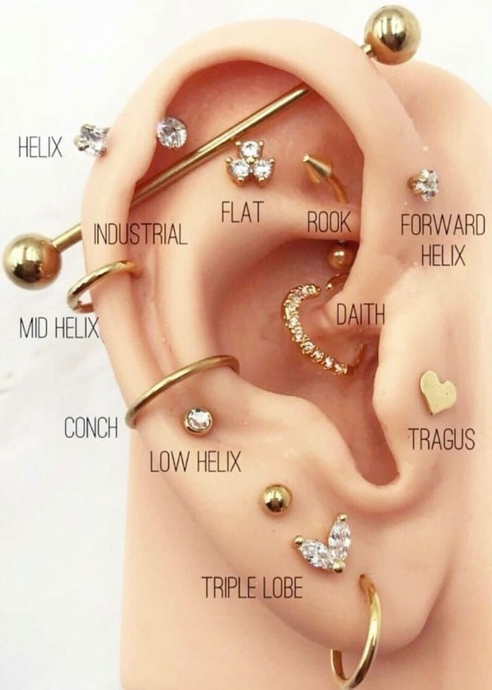
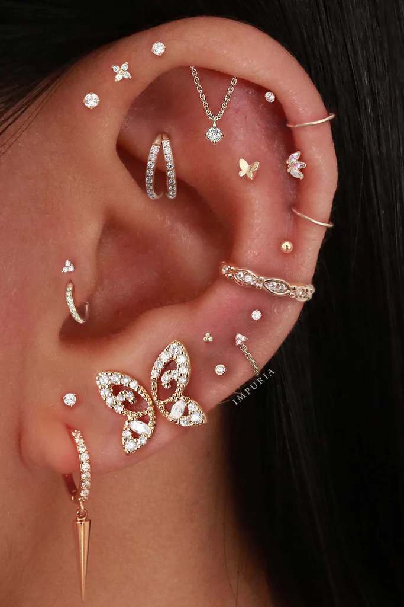
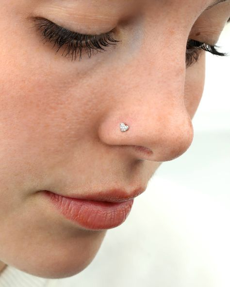
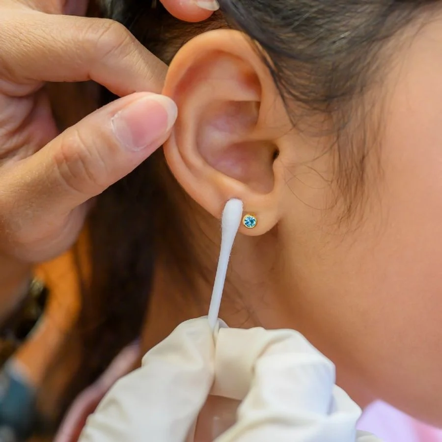
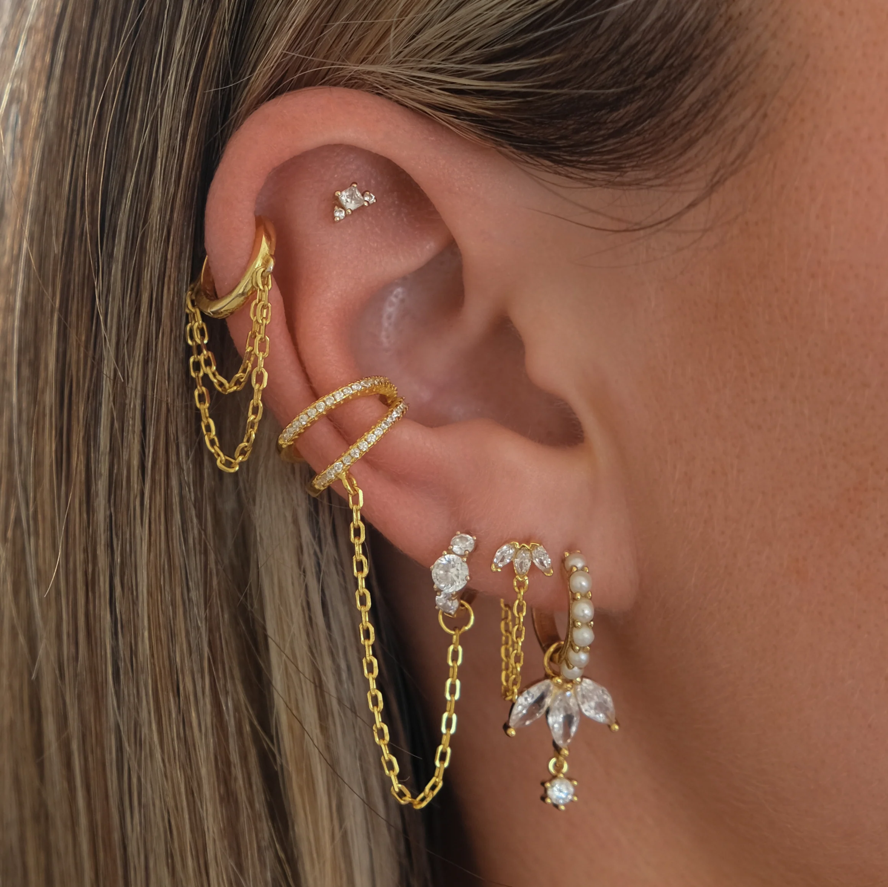

Piercers
Melody Swindle - Melody has been a professional piercer for over 10 years and specializes in various types of body piercings.
Nate Kilden - Nate is known for their precision and gentle touch, ensuring a comfortable piercing experience.
Before Piercing Notes
Before getting a piercing, please keep the following notes in mind:
- Ensure you are well-hydrated and have eaten something light before your appointment.
- Avoid alcohol and caffeine before your piercing session.
- Make sure to bring a valid ID for age verification.
- Discuss any allergies or medical conditions with your piercer beforehand.
Aftercare Notes
Proper aftercare is crucial for a successful healing process. Here are our recommended aftercare tips:
- Clean your piercing twice a day with a saline solution.
- Avoid touching the piercing with dirty hands.
- Refrain from swimming in pools or hot tubs until fully healed.
- Avoid changing the jewelry until your piercer gives the go-ahead.
Cost
Our piercing services are competitively priced. Here is a breakdown of our costs:
- Ear Piercings: $40
- Nose Piercings: $50
- Belly Button Piercings: $60
- Other Piercings: Please contact us for a quote.
Gallery




